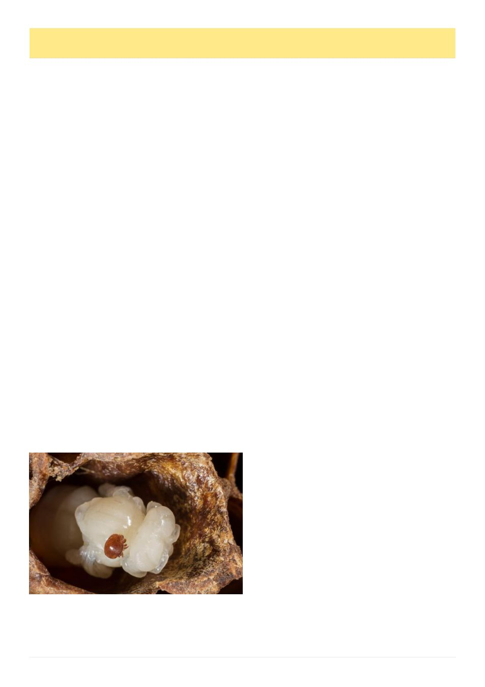

12
Australian Bee Journal
Article originally published in
The Amateur Beekeeper July 2026
By Mike Allerton
Australian beekeepers have had to learn varroa man-
agement quickly. We have moved from eradication to
transition to management, to the uncomfortable reality
of living with Varroa destructor. Many recreational
beekeepers are still building confidence with monitor-
ing, thresholds and treatment timing. Now the job has
become harder again.
In early 2026, resistance to synthetic pyrethroid
treatments was confirmed in New South Wales and
Queensland.1,2 These are the products many beekeepers
know as Bayvarol and Apistan. Soon after, amitraz
resistance was confirmed in Queensland and then New
South Wales, affecting the amitraz products Apivar and
Apitraz.3,4 AHBIC later reported that synthetic chemi-
cal resistance detections were broadly established
across NSW and southern Queensland and were no
longer considered geographically confined.5 National
outbreak reporting has since stated that, except for the
ACT, all states with varroa populations are experienc-
ing resistance to both major synthetic treatment
groups.6
That matters to every beekeeper, including those
with only one or two hives. Synthetic strips were ex-
pected to be the emergency backstop. They were legal,
familiar, easy to apply and widely promoted. Many
beekeepers assumed that if mite counts rose, they could
simply insert strips and regain control. In areas where
resistant mites are present, that assumption is now dan-
gerous.
This does not mean every hive in Australia contains
resistant mites. It does not mean every synthetic treat-
ment will fail every time. It does mean beekeepers can
no longer assume that a legal product is also an effec-
tive product in their own apiary. From now on, the on-
ly honest answer is to monitor before treatment, moni-
tor during treatment where appropriate, and monitor
again after treatment.
The resistance confirmed in NSW and Queensland
appears to be part of a newer mite population, separate
from the original 2022 Newcastle detection.5,6 That
point is important. It suggests Australia is not only
dealing with resistance created by misuse after varroa
established here. We appear to have received a mite
population that already carried resistance to our most
convenient synthetic tools. Beekeepers did not create
this problem alone, but beekeepers are now expected to
manage the consequences.
From an Amateur Beekeepers Australia biosecurity
perspective, this exposes a serious weakness in Austral-
ia‘s varroa preparedness. We entered management with
too few legal options, too little flexibility and too much
reliance on a narrow group of registered or permitted
products. When both synthetic chemical groups are
compromised, the remaining legal options are mostly
organic acids and thymol.7 Those treatments are valua-
ble, but they are not simple replacements for amitraz
and pyrethroid strips.
The current Australian treatment list includes eight
products, four synthetic and four non-synthetic.7 The
synthetic products are Apistan, Bayvarol, Apivar and
Apitraz. The non-synthetic products are Api-Bioxal,
Apiguard, Formic Pro and Aluen CAP.7 Where re-
sistance to pyrethroids and amitraz is present or sus-
pected, the practical legal toolbox is reduced to the non-
synthetic group. That is a very small toolbox for a na-
tional pollination industry and for thousands of recrea-
tional beekeepers trying to keep colonies alive.
Formic Pro is particularly valuable because formic
acid can affect mites in capped brood as well as mites
on adult bees.8 That is important when colonies are
brood rearing heavily, which in much of Australia can
be a large part of the year. The limitation is that formic
acid is temperature-sensitive and can be hard on colo-
nies when used outside the permit conditions. Under
Australian permit information, Formic Pro is to be used
when daytime highs are between 10 degrees and 29.5
degrees Celsius, with warning that hot temperatures
above 33 degrees during the first three days may lead to
excessive bee, brood or queen loss.8 That immediately
limits its use in many Australian conditions.
Apiguard, based on thymol, is another useful non-
synthetic treatment.7 It can be helpful when honey su-
pers are off and temperatures suit the label. However,
thymol can disturb bees, is temperature-dependent and
is not ideal for every season or every colony condition.
Like all treatments, it must be used exactly according to
its label or permit.
Api-Bioxal gives beekeepers a legal oxalic acid op-
tion under APVMA permit.10 Oxalic acid is most ef-
fective against phoretic mites, meaning mites on adult
bees. It does not reliably kill mites sealed under capped
brood. That makes timing critical. Oxalic acid works
best when the colony is broodless, nearly broodless, or
when the beekeeper deliberately creates a brood break.
Used into a full brood nest, it may produce a mite fall
and still leave a large reproductive mite population pro-
tected in sealed cells.
Aluen CAP (see image page 13) is a slow-release
oxalic acid strip and is a welcome legal addition.9,11 It
is especially important because many beekeepers have
(Continued on page 13)
Resistant Varroa, Fewer Legal Tools And A Harder Road Ahead
Varroa Foundress on Bee Pupa
Image licensed to Mike Allerton 123RF